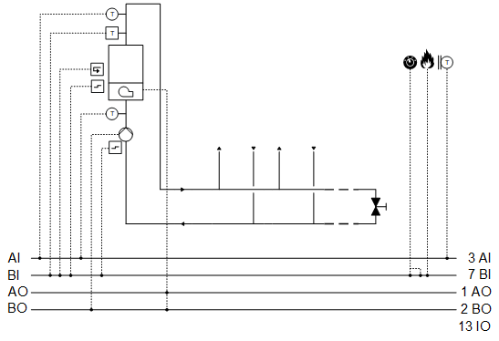

[HGen23] Heat generation, 1 boilers with external boiler control (on/off command, setpoint, feedback, common fault)
Plant example HGen23 has one boiler with its own control (external control).
Functions
- Collects heat demand and controls to the corresponding setpoint
Plant diagram

Components
- One boiler with own control
Components and functions
Components and functions of the plant example:
Component | Function | BACnet object |
|---|---|---|
| Sensor for outside temperature Measures outside temperature. | > [AI] Outside air temperature |
| Fire detection contact Switches the plant off. | [BI] Fire detection contact |
| Operating mode switch Switches the plant to: Auto | Off | On | [MI] Operating mode switch |
| Manual operating mode selection Switches the plant to: Auto | Off | On | [MCnfVal] Manual operating mode selection |
| Present operating mode Reports the present operating mode: Off | On | [MCalcVal] Present operating mode |
| Reason for present operating mode Reports the reason for the present operating mode: Exception | Operating mode switch | Manual operating mode selection | Heat request | [MCalcVal] Reason for present operating mode |
| Heat request Acquires and evaluates the heat request. | [ACnfVal] Offset for setpoint heating request [ACnfVal] Minimum setpoint heating request |


Boiler
Component | Function | BACnet object |
|---|---|---|
| Boiler |
|
| Boiler temperature Sensor for boiler temperature Measures the boiler temperature. | [AI] Temperature |
| Safety temperature limiter Monitors the boiler temperature. Switches off external control of the boiler. The boiler pump is switched on for two minutes. The pump is then switched off. Switches the plant off. | > [BI] Safety temperature limiter |
| Interface to external control |
|
Release Release for external control | > [BO] Command | |
Setpoint for boiler temperature Transfers a temperature setpoint for external control. | > [AO] Temperature setpoint | |
Fault message Reports faults. Switches the plant off. | > [BI] Fault | |
Feedback, binary | > [BI] Feedback | |
| Return temperature sensor Measures the return temperature. | [AI] Return temperature |
| Pump |
|
Command Switches on/off the pump as needed. | > [BO] Command | |
Fault message Reports faults. Switches the plant off. | > [BI] Fault |
 Boiler
Boiler


Functions and diagrams
Boiler with external control, single-stage pump
Operating modes: Off, On
Components, sequence, and function in [CMDSEQ_B] Command sequence for binary
Plant operating mode | Component | |
|---|---|---|
| Pu | ExtCtl |
Off | Off | Off |
On | On | On |
| ||
Sequences |
| |
Start sequence | 1 | 1 |
Start function | AND (Group with next aggregate) | AND (Group with next aggregate) |
Start delay | - | - |
| ||
Stop sequence | 2 | 1 |
Stop function | AND (Group with next aggregate) | Delay |
Stop delay | - | 2m |
Start sequence
- The pump and external control coil switch on at the same time (function AND, Group with next aggregate).
Stop sequence
- External control switches off. It waits for 2 minutes (function Delay).
- The pump switches off.
Plant operating modes and control sequence
Plant operating modes:
- Off (1)
- On (2)
The operating modes are reported on [MCalcVal] object 'Present operating mode'.
At the same time, the reason for the present operating mode is reported to another [MCalcVal] object:
- Exception (1)
- Operating mode switch (2), resulting from an active (not equal to Auto) operating mode switch
- Operating mode (3), resulting from an active (not equal to Auto) manual operating mode selection
- Heat request (4)
There is a normal mode and exception mode.
Normal operation
Sources for normal mode:
- [MI] Operating mode switch
- [MCnfVal] Manual operating mode selection
- [HReq (1)] Heat request
In normal mode, in operating mode 'On', the boiler switches on with function block CMDSEQ_B.
Exception mode
Sources for exception mode:
- Fire detection contact
- Boiler faults: Heating pump fault, fault to external control of the boiler or triggering of the safety temperature limiter
In exception mode, all outputs are switched off directly at priority 5 and the present operating mode is set to 'Off'.
It is reported at input [RpdOff] for CMDSEQ_B on the boiler.
Start-up control and alarm handling
Start-up control (nested chart SttUpAlmHdl)
The following functionality is available for an automatic startup of the plant, e.g. after a loss of power and return of power:
- Fixed switch-on delay (can be set on input pin [DlySttUp])
- The plant remains off to ensure communications are reliable and cross-check references are triggered. 'Exception' is reported as the reason for the present operating mode.
- Automatic acknowledge (2x) of possible pending alarms during a fixed switch-on delay.
- Additional adjustable delay for staged plant ramp-up (can be set on input pin [DlyOn])
Alarm handling (nested chart SttUpAlmHdl)
The state of events on the plant is acquired by BACnet object 'Plant state'. The state is mapped on function block [CMN_EVT] Common event.
The following functions are available:
- Automatic acknowledge (2x) after startup
- Alarm acknowledgement with a value object
- Alarm indication:
- For pending alarms On
- For unprocessed alarms flashing - Ability to connect the acknowledge button [BI]
- Ability to connect to an alarm indication [BO], e.g. an alarm lamp through an output block [BO]
- Ability to connect to other alarm handling functions on other plants, e.g. acknowledge button and alarm indication for multiple plants in the same control cabinet
I/O data points
Name | Description | Type | Signal/connection | State text | Engineering unit |
|---|---|---|---|---|---|
FireDetCont | Fire detection contact Alarm function: Extended (Notification class 7) Reference value: Tripped Time deviation: 0 [s] | BI | Contact NC | Normal | Tripped | N/A |
OpModSwi | Operating mode switch | MI | N/A | Auto | Off | On | N/A |
TOa | Outside air temperature | AI | LG-Ni1000 | N/A | -70...70 [°C]
|
Bo'T | Boiler temperature | AI | LG-Ni1000 | N/A | 0...100 [°C] |
Bo'TRt | Boiler return temperature | AI | LG-Ni1000 | N/A | 0...100 [°C] |
Bo'SftyTLm | Boiler safety temperature limiter Alarm function: Basic (Notification class 8) Reference value: Triggered Time deviation: 0 [s] | BI | Contact NO | Normal | Tripped | N/A |
Bo'ExtCtl'Flt | Boiler external control fault Alarm function: Basic (Notification class 8) Reference value: Triggered Time deviation: 0 [s] | BI | Contact NC | Normal | Tripped | N/A |
Bo'ExtCtl'Fb | Boiler external control feedback | BI | Contact NO | Off | On | N/A |
Bo'ExtCtl'SpT | Boiler external control temperature setpoint | AO | 0...10V | N/A | 0...100 [°C] |
Bo'ExtCtl'Cmd | Boiler external control command | BO | Contact NO | Off | On | N/A |
Bo'Pu'Cmd | Boiler pump command | BO | Contact NO | Off | On | N/A |
Bo'Pu'Flt | Boiler pump fault Alarm function: Extended (Notification class 7) Reference value: Triggered Time deviation: 0 [s] | BI | Contact NO | Normal | Tripped | N/A |